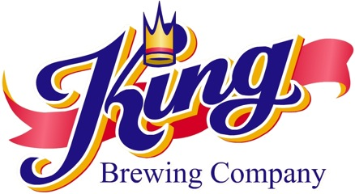
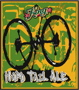
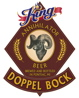
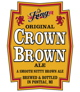

Our red ale or Amber ale has a medium body, is well balanced and finishes clean and smooth. Four different malts and Yakima valley hops are used in this satisfying ale. ABV 5.0%

This is the big hitter in our line-up. The beer is a dark amber, full-bodied, alcoholic powerhouse. It is a rich, malty, smooth sipper that is aged three months to remove the sharp edge. ABV 8.5%

This India Pale Ale is a full bodied hoppy beer. We use American hops & yeast to create this unfiltered aromatic ale. ABV 7.5%

Two row malted barley, crystal malt roasted barley & a heavy dose of chocolate malt blended well with French roast coffee, create a complex serious brooding ale. ABV 9.0%

A classic American Ale (my favorite)

This robust beer is black in color, has a medium body and has moderate alcohol. Roasted malts give this beer its dark color and full flavor. Although our porter is dark and brooding it is a relatively easy drinking beer. ABV 5.8%

This malty alcoholic lager contains a blend of roasted malts and a small amount of noble hops. ABV 8.5%

Our wheat beer is a classic Bavarian style wheat beer. German hops, malt and yeast give this beer its authentic character. The beer is not filtered, has a classic wheat nose and is very refreshing. ABV 5.2%

Brewed in the late summer to be released in autumn, this lager is malty and full-bodied. It is a light copper colored beer and possesses a substantial amount of alcohol, but finishes smooth and clean. ABV 7.0%

This was the first beer we released. It has a deep brown color, a nutty nose and a smooth mouthfeel. The creamy white head and light chocolate flavor make this beer a favorite for both dark beer drinkers and light beer drinkers. ABV 5.0%
We use whole Traverse City cherries to brew this unique ale. Although a hefty quantity of cherries are used, this is still very much a beer. The cherries give this beer a pale pink hue and refreshing tart finish. This is not a cherry soda and does not taste like cough syrup, but is a complex and well integrated fruit beer. ABV 7.0%

This beer has a medium body, is golden to amber in color and has moderate alcohol. We use British hops and our own yeast strain to create this classic British style ale. The hops give this beer its soul and texture. ABV 5.5%
This is one of three lagers we currently brew at the brewery. Stylistically, this beer falls somewhere between a German Pilsner and a Dortmund. Our lager is light in color, smooth and satisfying. It’s light color and smooth texture belies and hefty dose of noble hops added to this complex beer. ABV 5.2%